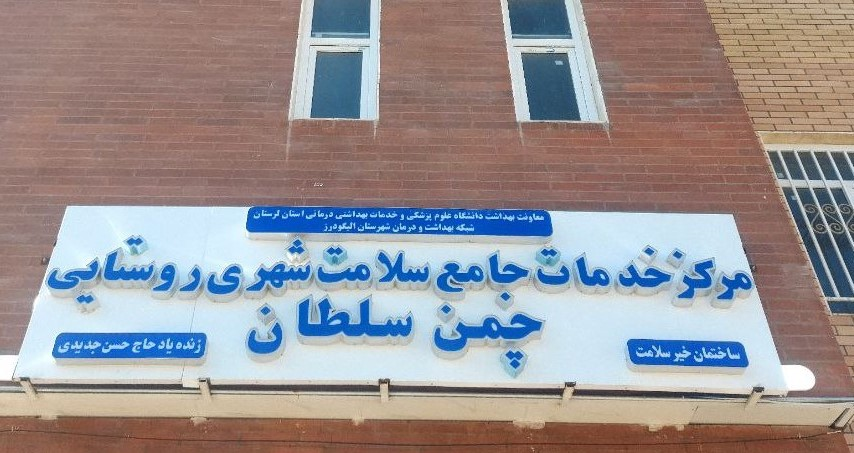

.درمانگاه چمن سلطان در سال 1402 به همت خیرین محترم و بنیاد علوی در زمینی به مساحت 400 متر مربع با بودجه ای بالغ بر 40 میلیار ریال، در دو طبقه ی مجزا جهت ارایه ی خدمات به مراجعین محترم در شهر چمن سلطان ساخته شد. این درمانگاه دارای واحد های مختلف مانند واحد پزشک عمومی ، مامایی و غیره است. همچنین لازم به ذکر است که خیرین در تلاش برای گسترش واحد ها و خدمات این درمانگاه مانند بخش رادیولوژی ، دندانپزشکی، بهورزی، سالمندان ،آموزش هستند
